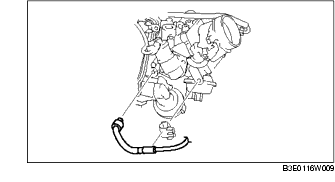

ENTLÜFTUNGSMAGNETVENTIL AUSBAUEN/EINBAUEN [LF]
B3E011618740W01
1. Den Stopfen entfernen.
2. Die Batterieabdeckung ausbauen. (Siehe BATTERIE AUSBAUEN/EINBAUEN [LF].)
3. Das Massekabel der Batterie abklemmen.
4. Nachfolgend beschriebene Weise für den Ausbau befolgen:
-
Achtung
-
• Das Entlüftungsmagnetventil und den Kraftstoffdampf-Entlüftungsschlauch nicht lösen, außer wenn das Entlüftungsmagnetventil ausgetauscht wird, da sonst Kraftstoffdampflecks auftreten können. Falls es erforderlich sein sollte, das Entlüftungsmagnetventil für den Ausbau/Einbau anderer Teile auszubauen, das Ventil an der Rastkupplung lösen.
-
(1) Den Kraftstoffdampf-Entlüftungsschlauch am seitlichen Anschluss des Auffangbehälters lösen. (Siehe Einbauhinweis für Kraftstoffdampf-Entlüftungsschlauch.)
-
(2) Das Unterdruckrohr vom Luftansaugkrümmer abziehen.

5. Der Einbau erfolgt in umgekehrter Reihenfolge.
Einbauhinweis für Kraftstoffdampf-Entlüftungsschlauch
1. Kraftstoffdampf-Entlüftungsschlauch und Schlauchklemme wie in der Abbildung gezeigt anbringen.